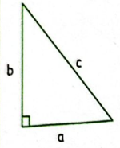

Section 4.1 Pythagorean relationship
Why pythagorean relationship?
Pythagorean relationship is used in real life in different areas. We use the pythagorean relationship in surveying,engineering and capentry to desighn houses, furniture,fields and land sub-division.
About 2000 years ago, an amazing discovery was made about right angled triangles. If squares of length equivalent to the sides of the triangle, then the sum of the area of the two small squares is exactly the same as the area of the large square. As shown in the figure below;
The sides of a right-angled triangle
Work in Groups
Activity 4.1.1.
Read the story below.
Harriet and Henry are Grade 7 learners. During the August holiday, they visited their grandmother,who lives nearby a village. Their grandmother is a grocer. Harriet and Henry help there grandmother to fetch fruits from a tree for selling.Harriet used a \(10 m\) ladder to climb the fruit tree. The ladder had its foot \(6 m\) from the bottom of the tree and leaned on the tree at the height of \(8 m\text{.}\)
Learning point
Draw the figure that has been formed between the tree, ladder and the ground?
How many sides does it have?
Which is the longest side of the figure?
Identify the two shorter sides of the figure.
Name the side of the figure. You may use digital devices to research on the internet.
Share your findings with other leaners in class.
Solution.
Here is the correct solution
The figure formed between the tree, ladder and the ground is a right-angled tringle.
A right-angle triangle has three sides: the base, the perpendicular height and the hypotenuse.
The side that is \(8 m\) long is the perpendicular height.
The side that is \(6 m\) long is the base.
The side that is \(10 m\) long is the hypotenuse.
The longest side in a right-angled triangle is the hypotenuse.
The two shorter sides of this figure are the base and the perpendicular height.
The pythagorean relationship.

From the fugure alongside, side a is the \(base\text{,}\) side b is the \(height\) and side c is the \(hypotenuse\text{.}\)Therfore the relationship is,
\begin{equation*}
a^2+b^2=c^2
\end{equation*}
\begin{align*}
b^2= \amp c^2-a^2\\
a^2= \amp c^2-b^2
\end{align*}
Example 4.1.1.
Find the length of the side marked y in the right-angled triangle below.
Solution.
\begin{align*}
c^2=\amp a^2+b^2 \\
y^2=\amp (8 cm)^2+ (6 cm)^2 \\
y^2=\amp(8 cm \times 8 cm)+ (6cm \times 6 cm) \\
y^2=\amp 64 cm^2 +36 cm^2 \\
y^2=\amp 100 cm^2 \\
y=\amp \sqrt{100 cm^2} \\
y=\amp 10 cm
\end{align*}
Therefore,
side \(y\) is \(10 cm\)
Application for pythagorean relationship
Example 4.1.2.
The base of a ladder is \(5 m\) from the base of a vertical wall. A painter places the ladder such that it touches the top of the wall at a point \(12 m\) above the ground.calculate the length of the ladder (c).
Hint.
Solution.
Using the pythagorean relationship that outlines that, \(a^2+b^2=c^2\) therefore,
\begin{align*}
c^2=\amp(5^2+12^2)m^2 \\
c^2= \amp(25+144)m^2 \\
c^2=\amp 169 m^2 \\
c=\amp \sqrt{169 m^2}\\
c=\amp 13 m
\end{align*}
Therefore,the length of the ladder (c) is \(13 m\)
Example 4.1.3.
Find the length of \(w \) in the figure below.
Solution.
\begin{align*}
w^2=\amp (40^2-24^2)cm \\
w^2=\amp 1 600cm^2 - 576cm^2\\
w^2=\amp 1 024cm^2\\
w=\amp \sqrt{1024cm^2} \\
w=\amp 32cm
\end{align*}
Therefore the length of \(w\) is \(32cm\)
Example 4.1.4.
In the triangle find the size of line \(PQ \)
Solution.
\begin{align*}
PQ^2=\amp (QR^2+PR^2)cm \\
PQ^2=\amp (24^2 + 18^2)cm^2\\
PQ^2=\amp 576cm^2 + 324cm^2\\
PQ^2=\amp \sqrt{900cm^2} \\
PQ=\amp 30cm
\end{align*}
Therefore the length of \(PQ\) is \(30cm\)